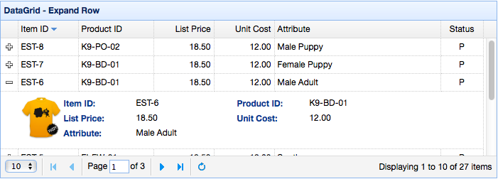

DataGrid
Contents
Extend from $.fn.panel.defaults. Override defaults with $.fn.datagrid.defaults.
The datagrid displays data in a tabular format and offers rich support to select, sort, group and edit data. The datagrid has been designed to reduce development time and to require no specific knowledge from developers. It is both featherweight and feature-rich. Cell merging, multi-column headers, frozen columns and footers are just a few of its features.
Dependencies
- panel
- resizable
- linkbutton
- pagination
Usage Example
Create datagrid from an existing table element, defining columns, rows, and data in html.
Create datagrid via <table> markup. The nested <th> tags define the columns on the table.
Create datagrid using javascript is also allowed.
Query data with some parameters.
After changing data to server, refresh the front data.
DataGrid Properties
The properties extend from panel. below is the added properties for datagrid.
| Name | Type | Description | Default |
|---|---|---|---|
| columns | array | The datagrid columns config object, see column properties for more details. | undefined |
| frozenColumns | array | Same as the columns property, but the these columns will be frozen on left. | undefined |
| fitColumns | boolean | True to auto expand/contract the size of the columns to fit the grid width and prevent horizontal scrolling. | false |
| resizeHandle | string |
Resizing column position, Available value are: 'left','right','both'.
When 'right', users can resize columns by dragging the right edge of column headers, etc. Available since version 1.3.2. |
right |
| autoRowHeight | boolean | Defines if set the row height based on the contents of that row. Set to false can improve loading performance. | true |
| toolbar | array,selector |
The top toolbar of datagrid panel. Possible values: 1) an array, each tool options are same as linkbutton. 2) a selector that indicate the toolbar. Define toolbar within a <div> tag:
$('#dg').datagrid({
toolbar: '#tb'
});
<div id="tb">
<a href="#" class="easyui-linkbutton" data-options="iconCls:'icon-edit',plain:true"/a>
<a href="#" class="easyui-linkbutton" data-options="iconCls:'icon-help',plain:true"/a>
</div>
Define toolbar via array:
$('#dg').datagrid({
toolbar: [{
iconCls: 'icon-edit',
handler: function(){alert('edit')}
},'-',{
iconCls: 'icon-help',
handler: function(){alert('help')}
}]
});
|
null |
| striped | boolean | True to stripe the rows. | false |
| method | string | The method type to request remote data. | post |
| nowrap | boolean | True to display data in one line. Set to true can improve loading performance. | true |
| idField | string | Indicate which field is an identity field. | null |
| url | string | A URL to request data from remote site. | null |
| data | array,object |
The data to be loaded.
Available since version 1.3.2.
Code example:
$('#dg').datagrid({
data: [
{f1:'value11', f2:'value12'},
{f1:'value21', f2:'value22'}
]
});
|
null |
| loadMsg | string | When loading data from remote site, show a prompt message. | Processing, please wait … |
| emptyMsg | string | The message to be shown when no records exist. | |
| pagination | boolean | True to show a pagination toolbar on datagrid bottom. | false |
| rownumbers | boolean | True to show a row number column. | false |
| singleSelect | boolean | True to allow selecting only one row. | false |
| ctrlSelect | boolean | True to only allow multi-selection when ctrl+click is used. Available since version 1.3.6. | false |
| checkOnSelect | boolean |
If true, the checkbox is checked/unchecked when the user clicks on a row.
If false, the checkbox is only checked/unchecked when the user clicks exactly on the checkbox. Available since version 1.3. |
true |
| selectOnCheck | boolean |
If set to true, clicking a checkbox will always select the row.
If false, selecting a row will not check the checkbox. Available since version 1.3. |
true |
| scrollOnSelect | boolean | If set to true, scroll to the row automatically when selecting it. Available since version 1.5.2. | true |
| pagePosition | string |
Defines position of the pager bar. Available values are: 'top','bottom','both'. Available since version 1.3. |
bottom |
| pageNumber | number | When set pagination property, initialize the page number. | 1 |
| pageSize | number | When set pagination property, initialize the page size. | 10 |
| pageList | array | When set pagination property, initialize the page size selecting list. | [10,20,30,40,50] |
| queryParams | object | When request remote data, sending additional parameters also.
Code example:
$('#dg').datagrid({
queryParams: {
name: 'easyui',
subject: 'datagrid'
}
});
|
{} |
| sortName | string | Defines which column can be sorted. | null |
| sortOrder | string | Defines the column sort order, can only be 'asc' or 'desc'. | asc |
| multiSort | boolean | Defines if to enable multiple column sorting. Available since version 1.3.4. | false |
| remoteSort | boolean | Defines if to sort data from server. | true |
| showHeader | boolean | Defines if to show row header. | true |
| showFooter | boolean | Defines if to show row footer. | false |
| scrollbarSize | number | The scrollbar width(when scrollbar is vertical) or height(when scrollbar is horizontal). | 18 |
| rownumberWidth | number | The width of the row number column. Available since version 1.5. | 30 |
| editorHeight | number | The default height of the editors. | 24 |
| rowStyler | function |
Return style such as 'background:red'. The function take two parameters: rowIndex: the row index, start with 0 rowData: the record corresponding to this row Code example:
$('#dg').datagrid({
rowStyler: function(index,row){
if (row.listprice>80){
return 'background-color:#6293BB;color:#fff;'; // return inline style
// the function can return predefined css class and inline style
// return {class:'r1', style:{'color:#fff'}};
}
}
});
|
|
| loader | function |
Defines how to load data from remote server. Return false can abort this action.
This function takes following parameters: param: the parameter object to pass to remote server. success(data): the callback function that will be called when retrieve data successfully. error(): the callback function that will be called when failed to retrieve data. |
json loader |
| loadFilter | function |
Return the filtered data to display. The function take one parameter 'data' that indicate the original data. You can change original source data to standard data format. This function must return standard data object that contain 'total' and 'rows' properties.
Code example:
// removing 'd' object from asp.net web service json output
$('#dg').datagrid({
loadFilter: function(data){
if (data.d){
return data.d;
} else {
return data;
}
}
});
|
|
| editors | object | Defines the editor when editing a row. | predefined editors |
| view | object | Defines the view of datagrid. | default view |
Column Properties
The DataGrid Columns is an array object, which element is an array too. The element of element array is a config object, which defines every column field.
Code example:
| Name | Type | Description | Default |
|---|---|---|---|
| title | string | The column title text. | undefined |
| field | string | The column field name. | undefined |
| width | number | The width of column. If not defined, the width will auto expand to fit its contents. No width definition will reduce performance. | undefined |
| rowspan | number | Indicate how many rows a cell should take up. | undefined |
| colspan | number | Indicate how many columns a cell should take up. | undefined |
| align | string | Indicate how to align the column data. 'left','right','center' can be used. | undefined |
| halign | string | Indicate how to align the column header. Possible values are: 'left','right','center'. If not assigned, the header alignment is same as data alignment defined via 'align' property. Available since version 1.3.2. | undefined |
| sortable | boolean | True to allow the column can be sorted. | undefined |
| order | string | The default sort order, can only be 'asc' or 'desc'. Available since version 1.3.2. | undefined |
| resizable | boolean | True to allow the column can be resized. | undefined |
| fixed | boolean | True to prevent from adjusting width when 'fitColumns' is set to true. | undefined |
| hidden | boolean | True to hide the column. | undefined |
| checkbox | boolean | True to show a checkbox. The checkbox column has fixed width. | undefined |
| formatter | function | The cell formatter function, take three parameters: value: the field value. rowData: the row record data. rowIndex: the row index. Code example:
$('#dg').datagrid({
columns:[[
{field:'userId',title:'User', width:80,
formatter: function(value,row,index){
if (row.user){
return row.user.name;
} else {
return value;
}
}
}
]]
});
|
undefined |
| styler | function |
The cell styler function, return style string to custom the cell style such as 'background:red'. The function take three parameter: value: the field value. rowData: the row record data. rowIndex: the row index. Code example:
$('#dg').datagrid({
columns:[[
{field:'listprice',title:'List Price', width:80, align:'right',
styler: function(value,row,index){
if (value < 20){
return 'background-color:#ffee00;color:red;';
// the function can return predefined css class and inline style
// return {class:'c1',style:'color:red'}
}
}
}
]]
});
|
undefined |
| sorter | function | The custom field sort function that used to do local sorting, take two parameters: a: the first field value. b: the second field value. Code example:
$('#dg').datagrid({
remoteSort: false,
columns: [[
{field:'date',title:'Date',width:80,sortable:true,align:'center',
sorter:function(a,b){
a = a.split('/');
b = b.split('/');
if (a[2] == b[2]){
if (a[0] == b[0]){
return (a[1]>b[1]?1:-1);
} else {
return (a[0]>b[0]?1:-1);
}
} else {
return (a[2]>b[2]?1:-1);
}
}
}
]]
});
|
undefined |
| editor | string,object | Indicate the edit type. When string indicates the edit type, when object contains two properties: type: string, the edit type, possible types are: text,textbox,numberbox,numberspinner, combobox,combotree,combogrid,datebox,datetimebox, timespinner,datetimespinner, textarea,checkbox,validatebox. options: object, the editor options corresponding to the edit type. |
undefined |
Editor
Override defaults with $.fn.datagrid.defaults.editors.
Every editor has following actions:
| Name | Parameters | Description |
|---|---|---|
| init | container, options | Initialize the editor and return the target object. |
| destroy | target | Destroy the editor if necessary. |
| getValue | target | Get value from editor text. |
| setValue | target , value | Set value for editor. |
| resize | target , width | Resize the editor if necessary. |
For example, the text editor is defined as following:
DataGrid View
Override defaults with $.fn.datagrid.defaults.view.
The view is an object that will tell datagrid how to render rows. The object must defines the following functions:
| Name | Parameters | Description |
|---|---|---|
| render | target, container, frozen | Called when the data is loaded. target: DOM object, the datagrid object. container: the rows container. frozen: indicate if to render the frozen container. |
| renderFooter | target, container, frozen | This is an option function to render row footer. |
| renderRow | target, fields, frozen, rowIndex, rowData | This is an option function and will be called by render function. |
| refreshRow | target, rowIndex | Defines how to refresh the specified row. |
| onBeforeRender | target, rows | Fires before the view is rendered. |
| onAfterRender | target | Fires after the view is rendered. |
Events
The events extend from panel, below is the added events for datagrid.
| Name | Parameters | Description |
|---|---|---|
| onLoadSuccess | data | Fires when data is loaded successfully. |
| onLoadError | none | Fires when some errors occur to load remote data. |
| onBeforeLoad | param | Fires before a request is made to load data. If return false the load action will be canceled. |
| onClickRow | index,row | Fires when the user clicks a row, the parameters contains: index: the clicked row index, start with 0 row: the record corresponding to the clicked row |
| onDblClickRow | index,row | Fires when the user double clicks a row, the parameters contains: index: the clicked row index, start with 0 row: the record corresponding to the clicked row |
| onClickCell | index,field,value | Fires when the user clicks a cell. |
| onDblClickCell | index,field,value | Fires when the user double clicks a cell.
Code example:
// when double click a cell, begin editing and make the editor get focus
$('#dg').datagrid({
onDblClickCell: function(index,field,value){
$(this).datagrid('beginEdit', index);
var ed = $(this).datagrid('getEditor', {index:index,field:field});
$(ed.target).focus();
}
});
|
| onBeforeSortColumn | sort,order | Fires before the user sorts a column, return false to cancel this action. Available since version 1.3.6. |
| onSortColumn | sort,order | Fires when the user sorts a column, the parameters contains: sort: the sort column field name order: the sort column order |
| onResizeColumn | field,width | Fires when the user resizes the column. |
| onBeforeSelect | index,row | Fires before the user selects a row, return false to cancel this action. Available since version 1.4.1. |
| onSelect | index,row | Fires when the user selects a row, the parameters contains: index: the selected row index, start with 0 row: the record corresponding to the selected row |
| onBeforeUnselect | index,row | Fires before the user unselects a row, return false to cancel this action. Available since version 1.4.1. |
| onUnselect | index,row | Fires when the user unselects a row, the parameters contains: index: the unselected row index, start with 0 row: the record corresponding to the unselected row |
| onSelectAll | rows | Fires when the user selects all rows. |
| onUnselectAll | rows | Fires when the user unselects all rows. |
| onBeforeCheck | index,row | Fires before the user checks a row, return false to cancel this action. Available since version 1.4.1. |
| onCheck | index,row | Fires when the user checks a row, the parameters contains: index: the checked row index, start with 0 row: the record corresponding to the checked row Available since version 1.3. |
| onBeforeUncheck | index,row | Fires before the user unchecks a row, return false to cancel this action. Available since version 1.4.1. |
| onUncheck | index,row |
Fires when the user unchecks a row, the parameters contains: index: the unchecked row index, start with 0 row: the record corresponding to the unchecked row Available since version 1.3. |
| onCheckAll | rows | Fires when the user checks all rows. Available since version 1.3. |
| onUncheckAll | rows | Fires when the user unchecks all rows. Available since version 1.3. |
| onBeforeEdit | index,row |
Fires before the user starts editing a row, return false to cancel this action.
The parameters contains: index: the editing row index, start with 0 row: the record corresponding to the editing row |
| onBeginEdit | index,row | Fires when a row goes into edit mode. Available since version 1.3.6. |
| onEndEdit | index,row,changes | Fires when finishing editing but before destroying editors. Available since version 1.3.6. |
| onAfterEdit | index,row,changes | Fires after the user finishes editing, the parameters contains: index: the editing row index, start with 0 row: the record corresponding to the editing row changes: the changed field/value pairs |
| onCancelEdit | index,row | Fires when the user cancels editing a row, the parameters contains: index: the editing row index, start with 0 row: the record corresponding to the editing row |
| onHeaderContextMenu | e,field | Fires when the header of datagrid is right clicked. |
| onRowContextMenu | e,index,row | Fires when a row is right clicked. |
Methods
| Name | Parameter | Description |
|---|---|---|
| options | none | Return the options object. |
| getPager | none | Return the pager object. |
| getPanel | none | Return the panel object. |
| getColumnFields | frozen |
Return the column fields. If frozen setted to true the frozen column fields is returned. Code example:
var opts = $('#dg').datagrid('getColumnFields'); // get unfrozen columns
var opts = $('#dg').datagrid('getColumnFields', true); // get frozen columns
|
| getColumnOption | field | Return the specified column option. |
| resize | param | Do resize and do layout. |
| load | param |
Load and show the first page rows. If the 'param' is specified, it will replace with the queryParams property.
Usually do a query by passing some parameters, this method can be called to load new data from server.
$('#dg').datagrid('load',{
code: '01',
name: 'name01'
});
|
| reload | param | Reload the rows. Same as the 'load' method but stay on current page. |
| reloadFooter | footer |
Reload the footer rows. Code examples:
// update footer row values and then refresh
var rows = $('#dg').datagrid('getFooterRows');
rows[0]['name'] = 'new name';
rows[0]['salary'] = 60000;
$('#dg').datagrid('reloadFooter');
// update footer rows with new data
$('#dg').datagrid('reloadFooter',[
{name: 'name1', salary: 60000},
{name: 'name2', salary: 65000}
]);
|
| loading | none | Display loading status. |
| loaded | none | Hide loading status. |
| fitColumns | none | Make columns auto expand/collapse to fit datagrid width. |
| fixColumnSize | field |
Fix columns size. If 'field' parameter is not assigned, all columns size will be fixed.
Code example:
$('#dg').datagrid('fixColumnSize', 'name'); // fix the 'name' column size
$('#dg').datagrid('fixColumnSize'); // fix all columns size
|
| fixRowHeight | index | Fix the specified row height. If 'index' parameter is not assigned, all rows height will be fixed. |
| freezeRow | index | Freeze the specify row that will always be displayed at the top when the datagrid is scrolled down. Available since version 1.3.2. |
| autoSizeColumn | field | adjusts the column width to fit the contents. Available since version 1.3. |
| loadData | data | Load local data, the old rows will be removed. |
| getData | none | Return the loaded data. |
| getRows | none | Return the current page rows. |
| getFooterRows | none | Return the footer rows. |
| getRowIndex | row | Return the specified row index, the row parameter can be a row record or an id field value. |
| getChecked | none | Return all rows where the checkbox has been checked. Available since version 1.3. |
| getSelected | none | Return the first selected row record or null. |
| getSelections | none | Return all selected rows, when no record selected, an empty array will return. |
| clearSelections | none | Clear all selections. |
| clearChecked | none | Clear all checked rows. Available since version 1.3.2. |
| scrollTo | index | Scroll to the specified row. Available since version 1.3.3. |
| gotoPage | param |
Go to the specified page. Available since version 1.4.4.
Usage example:
// go to page 3
$('#dg').datagrid('gotoPage', 3);
// go to page 3 with callback
$('#dg').datagrid('gotoPage', {
page: 3,
callback: function(page){
console.log(page)
}
})
|
| highlightRow | index | Highlight a row. Available since version 1.3.3. |
| selectAll | none | Select all current page rows. |
| unselectAll | none | Unselect all current page rows. |
| selectRow | index | Select a row, the row index start with 0. |
| selectRecord | idValue | Select a row by passing id value parameter. |
| unselectRow | index | Unselect a row. |
| checkAll | none | Check all current page rows. Available since version 1.3. |
| uncheckAll | none | Uncheck all current page rows. Available since version 1.3. |
| checkRow | index | Check a row, the row index start with 0. Available since version 1.3. |
| uncheckRow | index | Uncheck a row, the row index start with 0. Available since version 1.3. |
| beginEdit | index | Begin editing a row. |
| endEdit | index | End editing a row. |
| cancelEdit | index | Cancel editing a row. |
| getEditors | index | Get the specified row editors. Each editor has the following properties: actions: the actions that the editor can do, same as the editor definition. target: the target editor jQuery object. field: the field name. type: the editor type, such as 'text','combobox','datebox', etc. |
| getEditor | options | Get the specified editor, the options contains two properties: index: the row index. field: the field name. Code example:
// get the datebox editor and change its value
var ed = $('#dg').datagrid('getEditor', {index:1,field:'birthday'});
$(ed.target).datebox('setValue', '5/4/2012');
|
| refreshRow | index | Refresh a row. |
| validateRow | index | validate the specified row, return true when valid. |
| updateRow | param | Update the specified row, the param contains following properties: index: the row index to be updated. row: the new row data. Code example:
$('#dg').datagrid('updateRow',{
index: 2,
row: {
name: 'new name',
note: 'new note message'
}
});
|
| appendRow | row |
Append a new row. The new row will be added to the last position:
$('#dg').datagrid('appendRow',{
name: 'new name',
age: 30,
note: 'some messages'
});
|
| insertRow | param |
Insert a new row, the param contains following properties: index: the row index to insert into, if not defined, append the new row. row: the row data. Code examples:
// insert a new row at second row position
$('#dg').datagrid('insertRow',{
index: 1, // index start with 0
row: {
name: 'new name',
age: 30,
note: 'some messages'
}
});
|
| deleteRow | index | Delete a row. |
| getChanges | type | Get changed rows since the last commit. The type parameter indicate which type changed rows, possible value is: inserted,deleted,updated,etc. When the type parameter is not assigned, return all changed rows. |
| acceptChanges | none | Commits all the changes data since it was loaded or since the last time acceptChanges was called. |
| rejectChanges | none | Rolls back all the changes data since it was created, or since the last time acceptChanges was called. |
| mergeCells | options | Merge some cells to one cell, the options contains following properties: index: the row index. type: the row type, possible values are 'body','footer'. field: the field name. rowspan: the rowspan count to be merged. colspan: the colspan count to be merged. Code example:
// merge the footer rows
$('#dg').datagrid('mergeCells', {
index: 1,
field: 'name',
colspan: 2,
type: 'footer'
});
|
| showColumn | field | Display the specified column. |
| hideColumn | field | Hide the specified column. |
| sort | param |
Sort the datagrid. Available since version 1.3.6.
Code example:
// sort on a column
$('#dg').datagrid('sort', 'itemid');
// sort on a column with specified order
$('#dg').datagrid('sort', {
sortName: 'productid',
sortOrder: 'desc'
});
// sort on multiple columns
$('#dg').datagrid('sort', {
sortName: 'productid,listprice',
sortOrder: 'desc,asc'
});
|